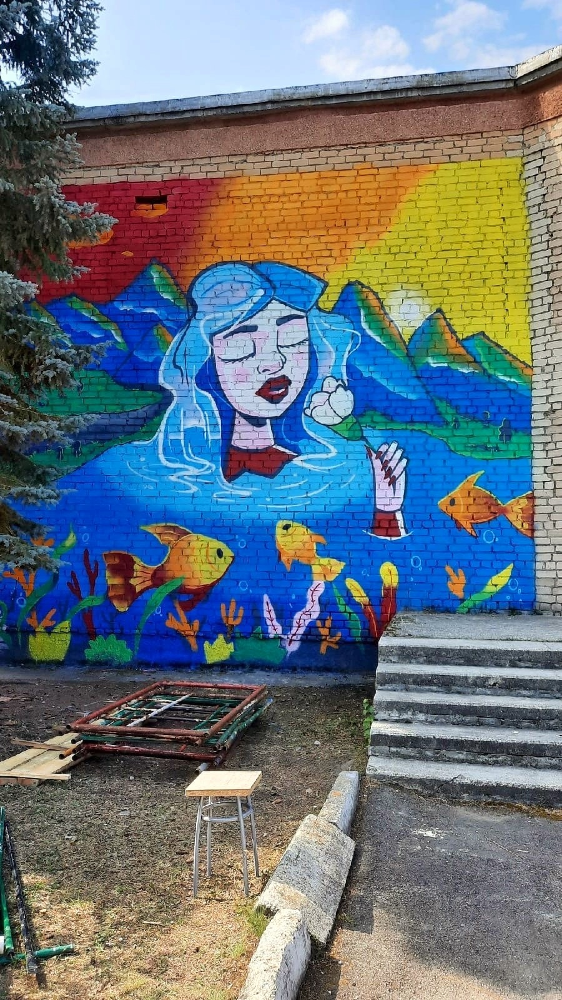
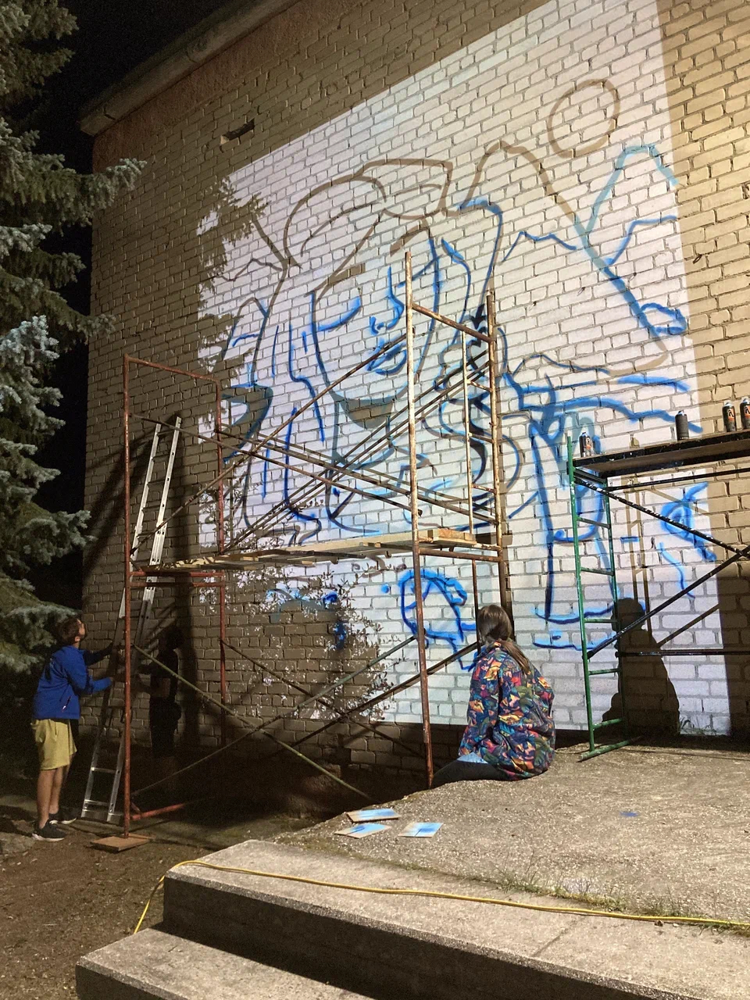
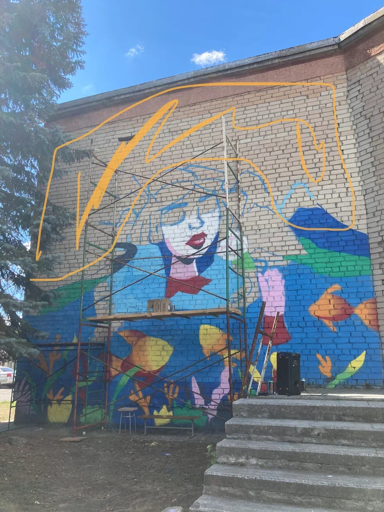
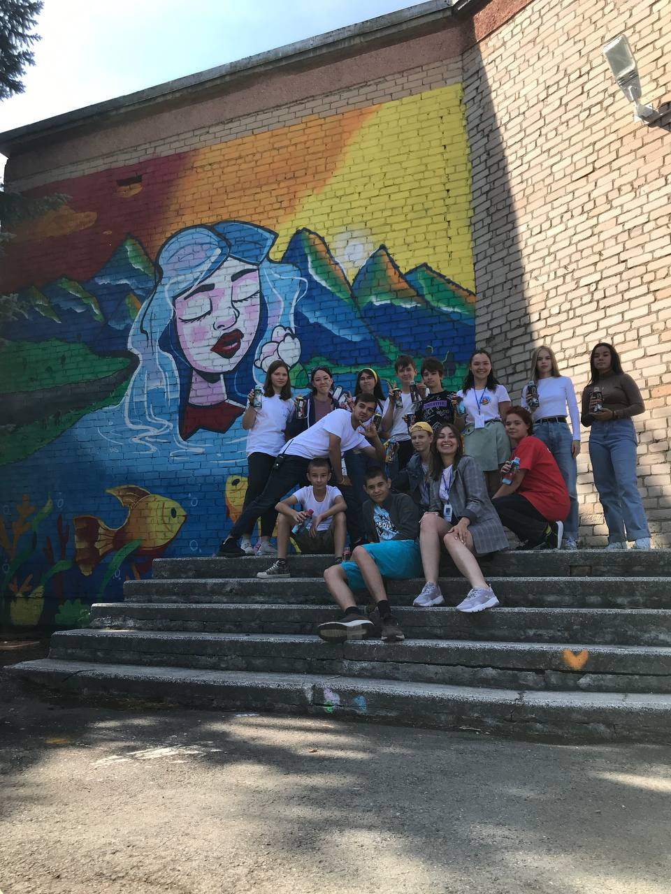

Красавица Сунгуль

Работа обращается к легенде о красавице Айгуль и батыре Сунгуре, которому она загадала три испытания.
Сунгур сумел поймать самую большую рыбу в озере и проложить дорогу через горы, призвав на помощь духов. Последнее желание Айгуль показалось проще: собрать все белые гвоздики. Но девушка заранее оставила несколько семян на острове. Когда там распустился последний цветок, стало ясно, что испытание не выполнено.
Сунгур уехал, а Айгуль осталась одна и продолжала приходить к озеру. По преданию, в память об этой истории его назвали Сунгуль — «поздний цветок».


